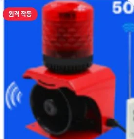

PRODUCT
설치 장소와 필요한 작동 방식으로 선택하는 음성안전 장비
전체 6개 제품
안내가 필요한 곳에, 또렷한 목소리
매장 · 건물 출입구
사람의 움직임에 반응하는 안전 안내
출입구 · 위험구역
소음이 많은 현장을 위한 음성 전달
건설 · 산업현장
소리와 빛으로 함께 전하는 위험 신호
작업구역 · 중장비

필요한 순간, 떨어진 곳에서도 작동
물류창고 · 지게차
정해진 시간에 전하는 반복 안내
사업장 · 공용공간
검색 결과가 없습니다. 다른 검색어를 입력해 주세요.
사진은 제품군 참고 이미지입니다. 출력·전원·방수 등 정확한 사양과 가격은 설치 조건을 확인한 후 안내합니다.
 음성안내기
음성안내기